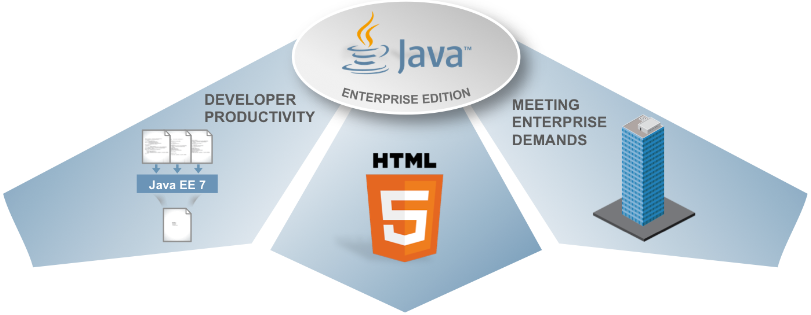

Overview
Code
Java SE/EE, Python, Julia, C, C++, JavaScript, Nodejs, Angular.
Agile Projektabwicklung.
IoT/M2M Projekte mit Analytics auf Basis der Grovestreams Plattform und dem Temboo API.
Kommunikations-Plattformen auf Basis des MQTT Protokolls.
SMS Kommunikation auf Basis des Twilio API.
Relationale- und NoSQL-Datenbanken (MySQL/MariaDB, MongoDB).
Tools
MQTT Detail
Message Queue Telemetry Transport Protokoll. MQTT ist ein offenes Protokoll für M2M Kommunikation. Entwickelt von IBM und Arcom. Seit 2016 ISO Standard (ISO/IEC 20922)
Grovestreams Detail
Grovestreams. Collect - Store - Analyze - Visualize - Share - Act on Big Data
Temboo
Einfaches Verbinden von Sensoren, Aktoren, Geräten, Daten und APIs zu Anwendungen mit der Codegenerierungs-Technologie von Temboo.
Twilio
Senden und empfangen von Textnachrichten mit dem Twilio API.
Java EE

Java Enterprise Edition. Spezifikation einer Softwarearchitektur für die
transaktionsbasierte Ausführung von Java Anwendungen, insbesondere Web-Anwendungen.
Sie ist eine der grossen Plattformen, die um den Middleware-Markt kämpfen.